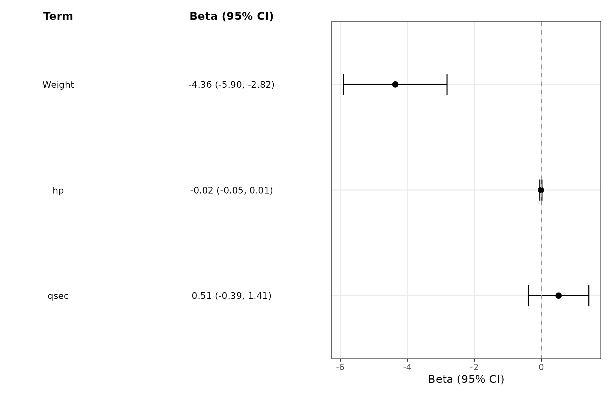
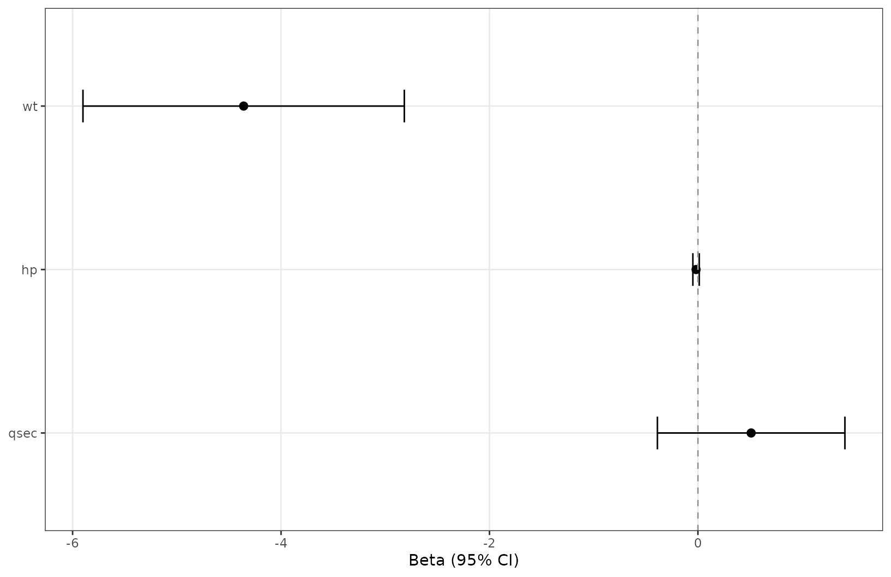
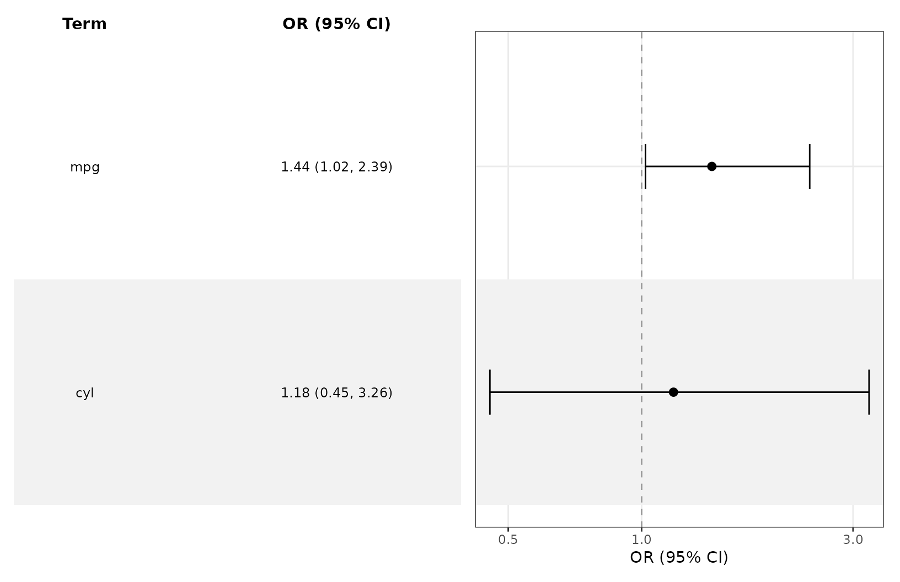
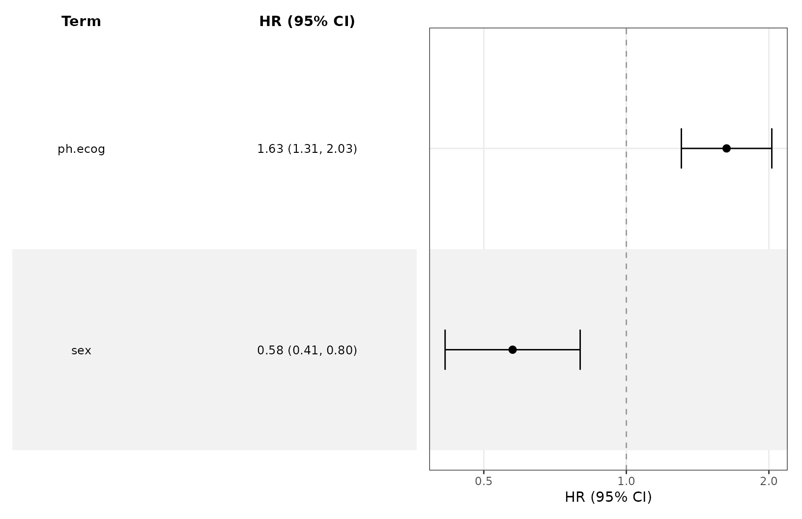
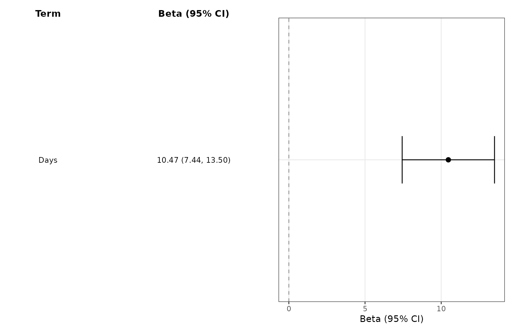
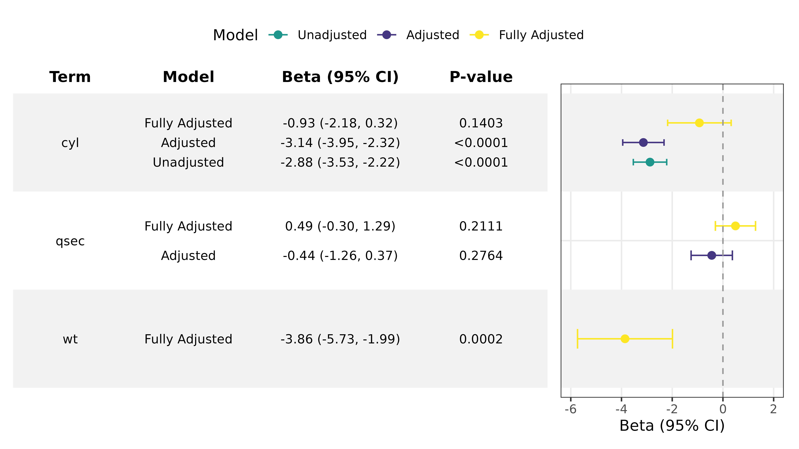
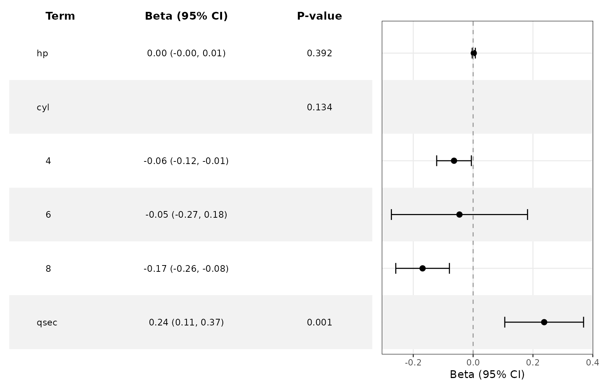
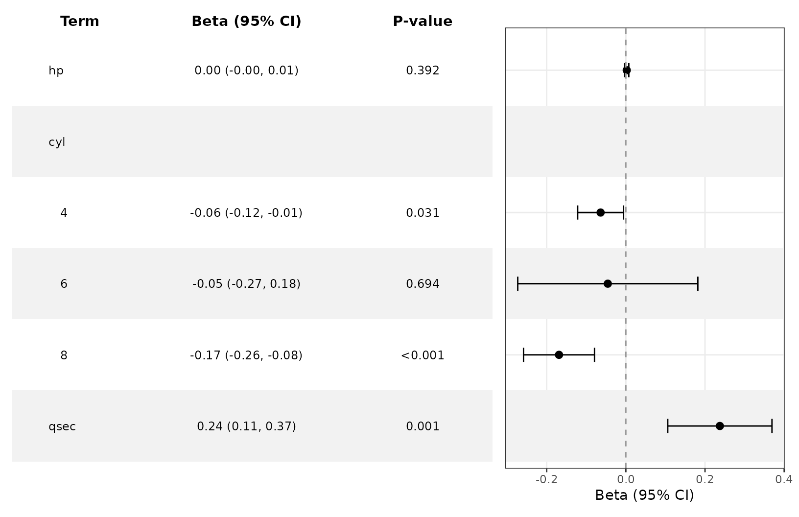
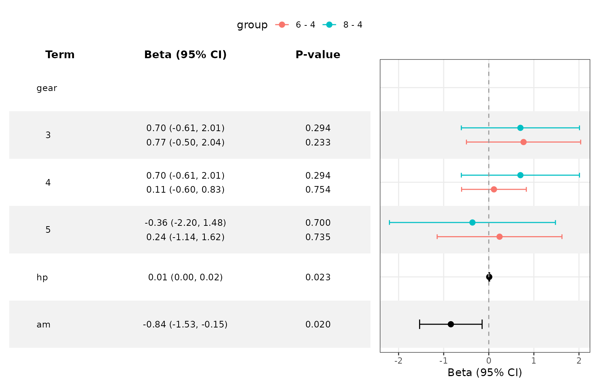

Working with Fitted Models
Source:vignettes/ggforestplotR-fitted-models.Rmd
ggforestplotR-fitted-models.RmdThis guide covers fitted-model inputs, effect scales, model comparisons, and derived subgroup effects. For appearance and layout, see Customize Forest Plots and Tables.
Supported fitted models
Explicit conversion methods are available for the following classes. Their tidiers must supply estimates and confidence limits.
| Model input | Required extraction packages | Output and scope |
|---|---|---|
stats::lm() (lm) |
broom |
Additive coefficients (Beta). |
stats::glm() (glm) |
broom |
Scale follows family and link, as described below. |
survival::coxph()
(coxph) |
broom, survival
|
Hazard ratios (HR). |
lme4 models (merMod) |
broom, broom.mixed,
lme4
|
Fixed effects; scale follows family and link. |
nlme::lme() (lme) |
broom, broom.mixed,
nlme
|
Fixed-effect additive coefficients. |
glmmTMB::glmmTMB()
(glmmTMB) |
broom, broom.mixed,
glmmTMB
|
Conditional-model fixed effects; excludes zero-inflation and dispersion coefficients. |
Coefficient extraction and derived subgroup effects have different
requirements. Subgroup inference additionally uses
marginaleffects and has the restrictions described below. A
broom tidier alone does not imply direct support for every
model class. For other inputs, use a coefficient table as described in
Preparing Forest Data.
Plot a fitted model
fit <- lm(mpg ~ wt + hp + qsec, data = mtcars)
ggforestplot(fit, term_labels = c("wt" = "Weight")) +
add_forest_table()
Inspect coefficients before plotting
If broom is available, the model-specific
as_forest_data() method pulls coefficient estimates and
confidence limits from a fitted model. The method also assigns model
semantics such as Beta, OR, or
HR.
fit <- lm(mpg ~ wt + hp + qsec, data = mtcars)
model_ready <- as_forest_data(fit)The returned object can be passed directly into
ggforestplot().
ggforestplot(model_ready)
tidy_forest_model() remains available as a compatibility
wrapper and returns the same forest_data object.
Effect scales and confidence intervals
With exponentiate = NULL, binomial and quasibinomial
logit models use odds ratios, Cox models use hazard ratios, and log-link
Poisson models use incidence rate ratios. Binomial log-link models use
risk ratios; identity-link binomial models use risk differences. Other
log-link families use a ratio label. Linear models retain additive
coefficients.
For fitted models, exponentiate = FALSE retains
unexponentiated coefficients; TRUE transforms coefficients
and bounds. For data frames, TRUE instead declares values
that are already ratios and does not transform them.
Ratio plots default to a log10 axis with reference value 1.
Use as_forest_data(fit, conf.level = 0.90) to request a
different confidence level. Confidence intervals are required.
Intercepts are omitted by default; use
as_forest_data(fit, intercept = TRUE) to retain them.
Logistic regression
logit_fit <- glm(am ~ mpg + cyl, data = mtcars, family = binomial())
ggforestplot(logit_fit, striped_rows = TRUE) + add_forest_table()
Survival analysis
cox_fit <- survival::coxph(
survival::Surv(time, status == 2) ~ ph.ecog + sex,
data = survival::lung
)
ggforestplot(cox_fit, striped_rows = TRUE) + add_forest_table()
Mixed models
mixed_fit <- lme4::lmer(
Reaction ~ Days + (Days | Subject), data = lme4::sleepstudy
)
ggforestplot(mixed_fit) +
add_forest_table()
Mixed-model plots show fixed effects, not random-effect variances or individual cluster effects. P-values are shown only when supplied by the tidier.
Compare fitted models
bind_forest_models() checks compatible effect scales,
axis transformations, reference values, and confidence levels. Labels
follow the supplied model order. Also check that outcomes, predictor
units, and populations make the comparison meaningful.
fit1 <- lm(mpg ~ cyl, data = mtcars)
fit2 <- lm(mpg ~ cyl + qsec, data = mtcars)
fit3 <- lm(mpg ~ cyl + qsec + wt, data = mtcars)
bound_models <- bind_forest_models(
list(fit1, fit2, fit3),
model_labels = c("Unadjusted", "Adjusted", "Fully Adjusted")
)
ggforestplot(bound_models, striped_rows = TRUE, p.value = "p.value") +
scale_x_continuous(limits = c(-6, 2)) +
theme(legend.position = "top") +
scale_color_manual(values = c("#1F968BFF", "#453781FF", "#FDE725FF")) +
add_forest_table(
columns = c("term", "model", "estimate", "p.value"),
p_digits = 4
)
#> Scale for colour is already present.
#> Adding another scale for colour, which will replace the existing scale.
Derive subgroup effects from an interaction model
For a fitted model with one continuous-by-factor interaction,
subgroup = "auto" identifies the factor from model metadata
and estimates the focal variable’s average slope within each observed
factor level.
interaction_fit <- lm(wt ~ hp + mpg * factor(cyl) + qsec, data = mtcars)
subgroup_ready <- tidy_forest_model(
interaction_fit,
subgroup = "auto",
focal = "mpg"
)
as.data.frame(subgroup_ready)[, c(
"term", "subgroup", "estimate", "conf.low", "conf.high", "p.value"
)]
#> term subgroup estimate conf.low conf.high p.value
#> 1 hp <NA> 0.002211858 -0.003019553 0.007443269 0.391515516
#> 2 4 cyl -0.063790596 -0.121760403 -0.005820789 0.133731900
#> 3 6 cyl -0.045622115 -0.273096846 0.181852616 0.133731900
#> 4 8 cyl -0.168851554 -0.258484920 -0.079218188 0.133731900
#> 5 qsec <NA> 0.237491332 0.105815640 0.369167024 0.001059097
ggforestplot(subgroup_ready, striped_rows = TRUE) +
add_forest_table(columns = c("term", "estimate", "p"))
These rows are average mpg slopes within the
cyl levels. They come from
marginaleffects::avg_slopes() using the original model and
its covariance matrix. No subgroup-specific models are refitted. The
focal main effect, factor main-effect coefficients, and raw interaction
coefficients are replaced by the derived block; unrelated coefficients
remain standalone in formula order.
The same interaction can be selected explicitly:
tidy_forest_model(
interaction_fit,
subgroup = "cyl",
focal = "mpg"
)
#> <forest_data> Beta; scale: identity; reference: 0
#> term estimate conf.low conf.high label row_type group subgroup
#> 1 hp 0.002211858 -0.003019553 0.007443269 hp estimate <NA> <NA>
#> 2 4 -0.063790596 -0.121760403 -0.005820789 4 estimate <NA> cyl
#> 3 6 -0.045622115 -0.273096846 0.181852616 6 estimate <NA> cyl
#> 4 8 -0.168851554 -0.258484920 -0.079218188 8 estimate <NA> cyl
#> 5 qsec 0.237491332 0.105815640 0.369167024 qsec estimate <NA> <NA>
#> grouping separate_groups n events p.value std.error statistic df
#> 1 <NA> <NA> <NA> <NA> 0.391515516 0.002534723 0.8726232 NA
#> 2 <NA> <NA> <NA> <NA> 0.133731900 0.029576976 -2.1567653 NA
#> 3 <NA> <NA> <NA> <NA> 0.133731900 0.116060669 -0.3930885 NA
#> 4 <NA> <NA> <NA> <NA> 0.133731900 0.045732150 -3.6921849 NA
#> 5 <NA> <NA> <NA> <NA> 0.001059097 0.063799498 3.7224640 NA
#> subgroup_level focal model_term contrast estimand effect_scale
#> 1 <NA> <NA> <NA> <NA> <NA> <NA>
#> 2 4 mpg mpg:factor(cyl) dY/dX average_slope identity
#> 3 6 mpg mpg:factor(cyl) dY/dX average_slope identity
#> 4 8 mpg mpg:factor(cyl) dY/dX average_slope identity
#> 5 <NA> <NA> <NA> <NA> <NA> <NA>Automatic selection currently requires exactly one unambiguous
continuous-by-factor interaction. Factor-by-factor effects require
explicit predictor names and use
marginaleffects::avg_comparisons(). Continuous subgroups,
transformed focal terms, multiple selected interactions, and three-way
interactions are rejected. Logistic and Cox effects are calculated on
their model scale and shown as odds ratios and hazard ratios by default,
not as marginal probabilities or survival probabilities.
The canonical p.value combines two compatible display
roles: ordinary covariates retain their coefficient p-values, while
every derived subgroup block receives an omnibus Wald test of the
selected interaction. The display layer moves that interaction p-value
to the subgroup header and leaves the individual levels blank, so one
table column can present both kinds of tests.
Use p_method = "level" when the subgroup-specific slope
or comparison tests are the quantities that should appear beside the
individual estimates:
level_p_ready <- tidy_forest_model(
interaction_fit,
subgroup = "auto",
focal = "mpg",
p_method = "level"
)
ggforestplot(level_p_ready, striped_rows = TRUE) +
add_forest_table(columns = c("term", "estimate", "p"))
Both methods use the same canonical p.value column.
"overall" changes the test and places it on the subgroup
header; "level" retains the tests returned for the derived
effects and places them on the subgroup rows.
Categorical-by-categorical
fit2 <- lm(wt ~ as.factor(gear)*as.factor(cyl) + hp + am, data = mtcars)
fit2 |>
tidy_forest_model(subgroup = "gear", focal = "cyl", p_method = "level") |>
ggforestplot(striped_rows = TRUE) +
theme(legend.position = "top") +
add_forest_table(columns = c("term", "estimate", "p.value"))
#> Warning: Some coefficients are `NA`, possibly because the model matrix is rank
#> deficient. In such cases, the quantities produced by `marginaleffects` may
#> depend on the order of factor levels. This warning appears once per session.
#> Warning: Model matrix is rank deficient. Some variance-covariance parameters are
#> missing.
#> Warning: The `cyl` variable is treated as a categorical (factor) variable, but
#> the original data is of class numeric. It is safer and faster to convert such
#> variables to factor before fitting the model and calling a `marginaleffects`
#> function. This warning appears once per session.
For mixed models, derived effects are population-level (random effects set to zero). Supported subgroup links are identity, logit, and log; Cox effects use the linear-predictor scale.